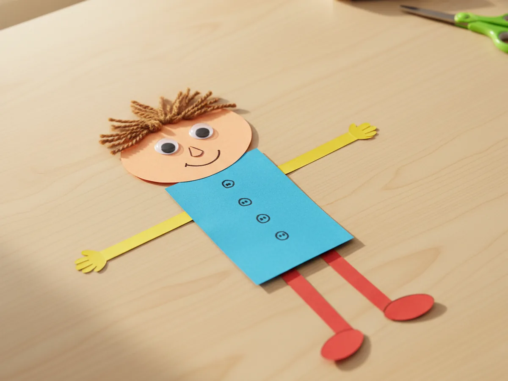
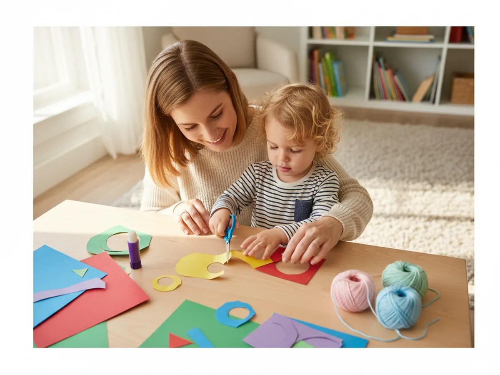
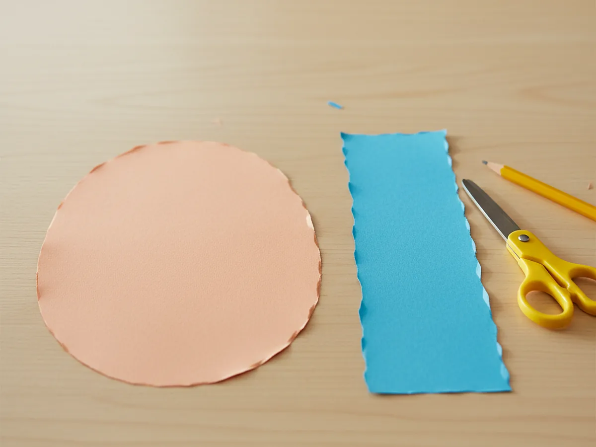
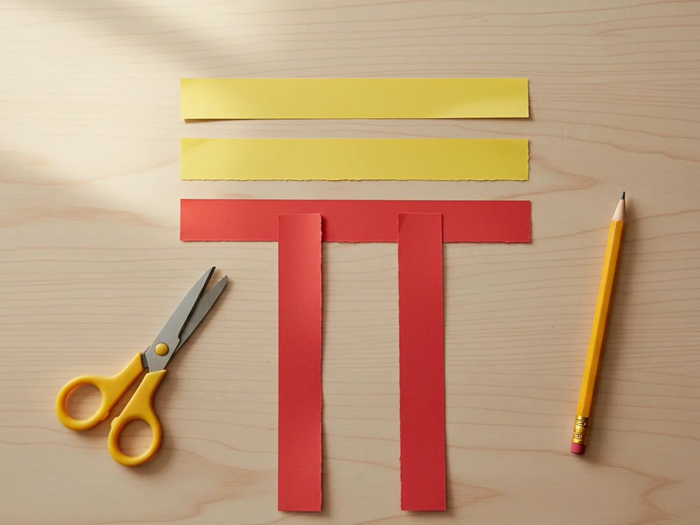
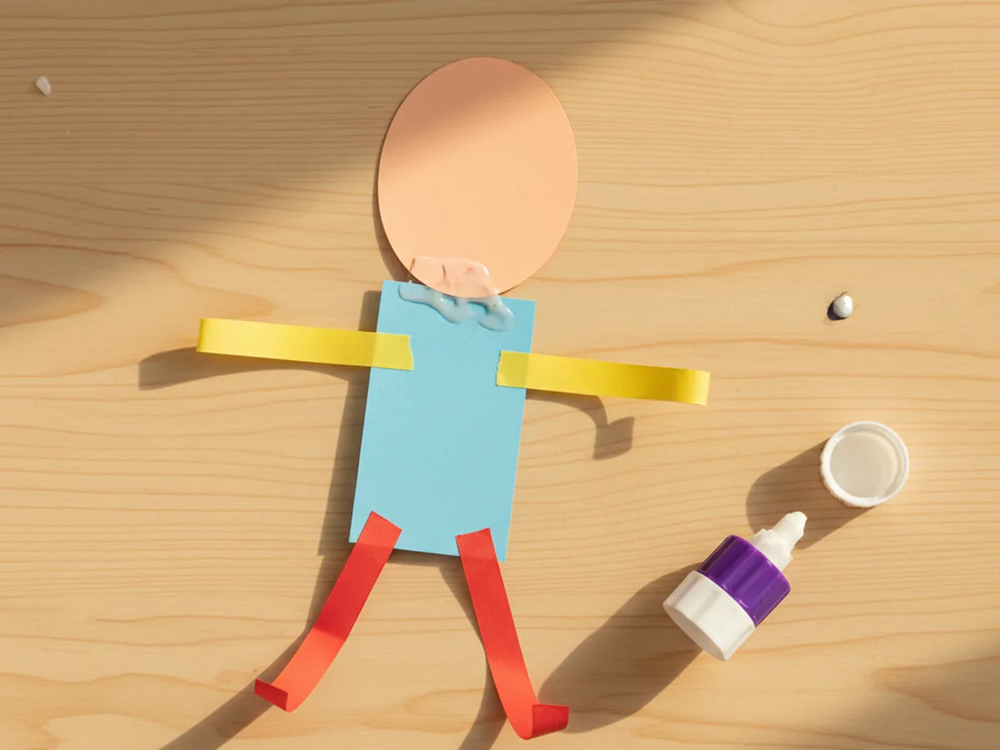
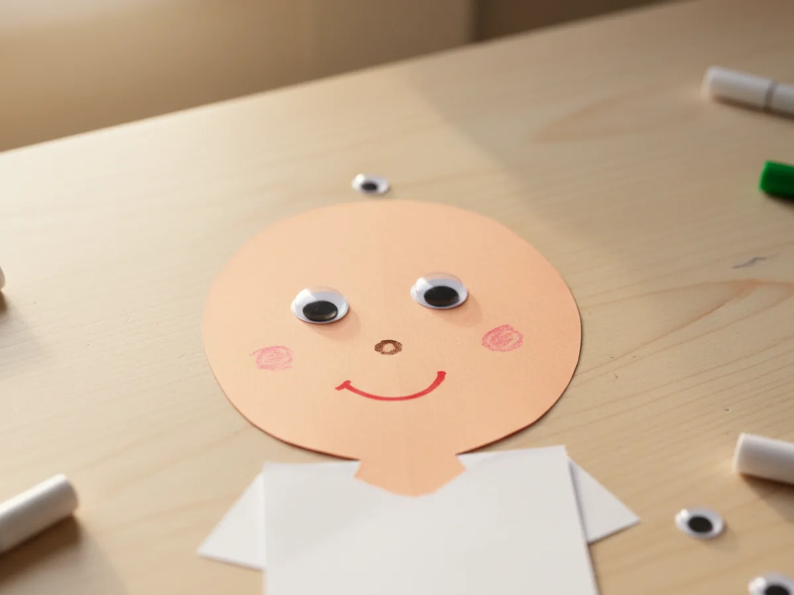
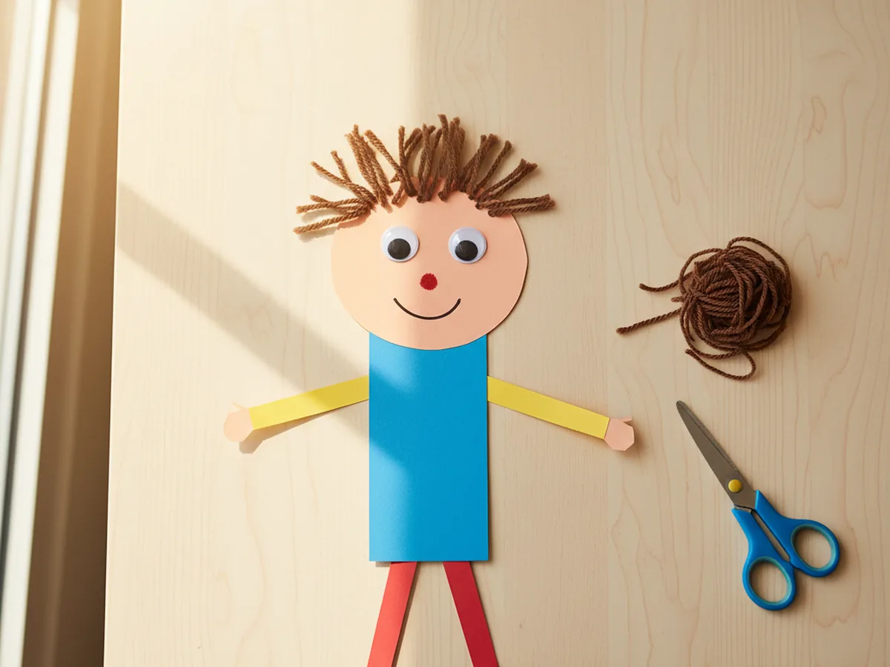
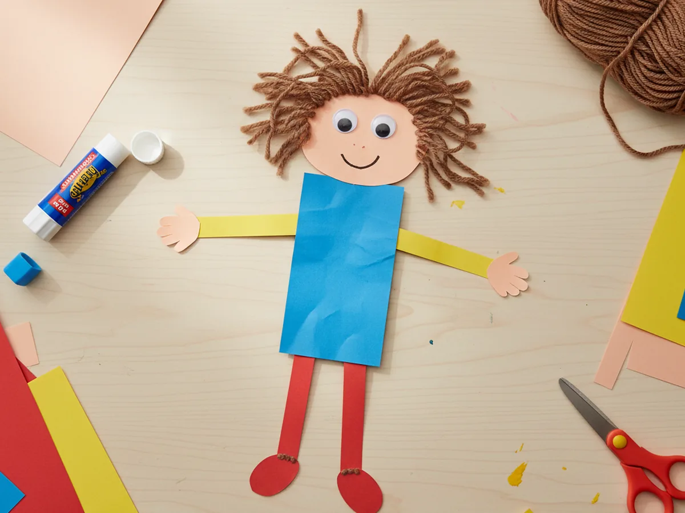
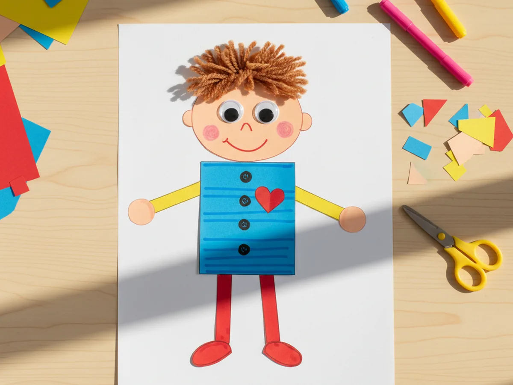

If you are looking for a sweet little project that brings out big smiles, this paper person craft is the perfect choice for a cozy afternoon together. 🎨 All it takes is a few sheets of construction paper, some glue, and a couple of fun extras like googly eyes and yarn. There is no painting, no waiting for things to dry, and the finished little person feels like a brand new friend by the time your child is done.
The magic of a paper person craft for kids is in how personal it gets. Your child picks the hair color, the outfit, the expression, and slowly a tiny character starts to look back at them from the paper. It is the kind of project that turns into a quiet, focused moment together, and the finished result feels like something really worth keeping.
Why Kids Love This Craft
There is something special about a paper person coming together piece by piece. Each little shape, the head, the body, the arms, the legs, becomes part of a small friend your child is building from scratch. Kids love that kind of step-by-step transformation, where flat paper slowly turns into a recognizable character with a face and a personality.
This easy paper person craft also gives kids plenty of gentle fine motor practice. Cutting basic shapes, pinching small googly eyes, snipping yarn for hair, and gluing everything down are all wonderful tiny tasks for little hands. Choosing the hair color, the outfit, and the expression also gives them real creative ownership, which is a big part of what makes the activity feel meaningful rather than just busy work.
Best of all, kids love giving their finished paper person a name and a story. Some children turn theirs into a self-portrait, others into a fairy or a superhero, and some make a whole little paper family. That imaginative play after the craft is finished is often just as joyful as the making itself. 💛

What You'll Need
Here is everything you need to set up this simple paper person craft at home. Gather your supplies before you start so the activity flows smoothly from the very first cut.
- Crayola Construction Paper (240 sheets, 12 assorted colors), the main material for the head, body, arms, legs, and clothes.
- Neenah Bright White Cardstock (250 sheets, 8.5 x 11), useful as a sturdy backing if you want to display or frame the finished person.
- Elmer's Disappearing Purple Glue Sticks (30 pack), washable and easy for small hands to manage without making a mess.
- Fiskars 5-Inch Pointed-Tip Scissors for Kids, perfect for ages 4 and up; use round-tip safety scissors for younger children.
- Self-Adhesive Googly Eyes (1000 pack, assorted sizes), no glue needed, and they instantly give the paper person personality.
- Mira Handcrafts Acrylic Yarn (40 assorted colors), snipped short to make fun, colorful hair for your paper person.
- Crayola Broad Line Markers (10 classic colors), for drawing the face details, outfit patterns, and small finishing touches.
- A pencil, for lightly sketching shapes before cutting.
Step-by-Step Instructions
This paper person craft step by step is wonderfully easy to follow, even for very young children. Take your time with each step and let your little one make as many choices as they can along the way.
Step 1: Cut the Head and Body
Start by choosing a piece of construction paper for the head. Almost any color works, since kids love making people in any shade they like. Lightly draw a large oval the size of your child's palm onto the paper, then cut it out together. Next, pick a different color for the body and cut out a tall rectangle about twice the height of the head.
For very young children, draw the shapes for them and let them practice cutting along the lines. For older kids, encourage them to sketch their own shapes so they can give their paper person a unique look from the very beginning.

Step 2: Cut the Arms and Legs
Now grab another sheet or two of construction paper for the arms and legs. They can match the body or be totally different colors, depending on what your child wants. Cut four long thin strips, two for the arms and two for the legs. The leg strips should be a little longer and slightly wider than the arm strips, but nothing needs to be perfect.
If your child is just starting to use scissors, cut the strips yourself and let them help by holding the paper steady. The cutting is just one small part of the craft, and the real fun starts during assembly.

Step 3: Glue the Body Together
Time to bring your paper person to life. Lay the body rectangle flat on the table and glue the oval head onto the top, with a small overlap so the head sits nicely attached to the body. Then flip the body over and glue the arms onto the back at the upper sides, and the legs onto the back at the bottom. When you flip it back, the arms and legs will stick out neatly from the body.
This is a fun moment for kids. Suddenly the pile of shapes turns into a clear little person shape, and most children get visibly excited at this stage. Take a second to celebrate it.

Step 4: Add the Face
Now for the part kids love most. Stick two self-adhesive googly eyes onto the head, leaving a little space between them. Then use markers to draw a tiny nose and a simple smiling mouth. You can also add cheeks with a pink marker, freckles with small dots, or even little eyebrows if your child wants to give the face more expression.
Encourage your child to play with the face. A goofy smile, a surprised mouth, or a sleepy expression all give the paper person craft instant personality and make it feel like a real little character.

Step 5: Make the Hair
Pick a yarn color together. It can be a realistic shade or something playful like bright pink, purple, or rainbow. Cut several short pieces of yarn, roughly the length of a finger, then apply a thin layer of glue along the top of the head. Press the yarn pieces down one by one to build up a fun head of hair.
If your child wants a different look, try gluing the yarn into pigtails, a long ponytail, a wild messy style, or just a few strands across the top for a bald look with a tuft. There is no wrong way, and that creative freedom is exactly what makes this paper person craft for kids so satisfying. 🌈

Step 6: Add Hands and Shoes
Cut two small circles or oval shapes from construction paper for the hands, and two slightly bigger oval shapes for the shoes. Glue the hands to the ends of the arms and the shoes to the ends of the legs. Suddenly the paper person looks finished and complete, ready to stand, run, or wave hello.
Let your child pick fun colors for the shoes. Bright red sneakers, sparkly silver shoes, or purple boots all make the little person feel more alive and unique.

Step 7: Decorate and Display
Now it is time to decorate the outfit. Use markers to draw buttons, stripes, polka dots, or a pocket on the body. You can also glue on small paper scraps to create a bow tie, a heart on the shirt, a tutu, a scarf, or even a little crown on the head. Tiny details make the paper person craft feel one of a kind.
Once everything is dry, glue the finished paper person onto a piece of white cardstock if you want a clean backing for display. Then hang it on the fridge, tape it to a bedroom door, or pop it inside a frame. Watching a child's face light up when their creation goes on display is one of the sweetest parts of crafting together. ✨

Variations to Try
Paper Person Family: Make a whole little family by repeating the steps with different sizes, hair colors, and outfits. A mom, a dad, a child, a baby, and even a pet can come together on a single sheet of cardstock for a sweet family portrait.
Self-Portrait Version: Help your child make a paper person that looks like them. Match the hair color and length, draw their favorite outfit, and add a special detail like their glasses or favorite hair clip. It makes a wonderful keepsake piece, and a great gift for grandparents.
Storybook Character Person: Turn the craft into a storybook character your child loves. Add a long cape for a superhero, a tall pointy hat for a wizard, fairy wings made from folded paper, or a tiara cut from gold foil. Use the finished character for pretend play afterward.
Final Thoughts
This paper person craft is one of those simple activities that gives back so much more than you would expect. There is no rush, no fancy technique, and no need to be artistic. Just a calm thirty-five minutes of cutting, gluing, and giggling as a tiny new friend slowly comes together piece by piece. 🥰
If your little one makes their own paper person, I would love to see it. Pin this article on Pinterest so other families can find it too, and have fun crafting together!
More Crafts You'll Love
If your child enjoyed making a paper person craft, these other paper projects are just as easy and just as joyful: